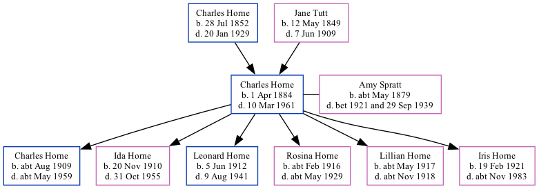

Charles Henry Horne 1884 - 1961
[ Home ] | [ Calendar ] | [ Surnames Index ] | [ Family History ]A market gardener worker and scholar and the son of Charles Horn (a waggoner on a farm)Charles Horne, the great-uncle of Nigel Horne, was born in St Peters, Thanet, Kent, England on Apr 1, 18841,2,3,4,5,6,7 and married Amy Spratt (with whom he had 6 children: Charles Isaac, Ida May, Leonard Edmund, Rosina Ellen, Lillian A and Iris Joan) at All Saints Church, Westbrook, Margate, Kent, England on Oct 3, 19089.
Charles spent all of his life in Kent, England. Throughout his life, he lived in several places around the county: at Drapers Cottage in Margate on Apr 5, 189113; at 15 Haine Cottages, St Lawrence, Thanet on Mar 31, 190114; at Walnut Tree Cottages, Haine, Thanet on Apr 2, 191115; at Sacketts Hill Farm, St Peters, Thanet on Jun 19, 192116 (when he was living with his father, Charles); on Refectory House, Tothill Street, Minster, Thanet in 193810 and on Sep 29, 19394; and at 18 Tothill Street, Minster, Thanet in 195312 and in 195511. Charles In 1921 he was working at Joseph Gunson Farmer at Sacketts Hill Farm, St Peters, Thanet, Kent, England.
He died on Mar 10, 1961 in Dover, Kent, England5,8.
Parents
- Charles was born on Jul 28, 1852
Children
- Charles Isaac was born c. Aug 1909
- Ida May was born on Nov 20, 1910
- Leonard Edmund was born on Jun 5, 1912
- Rosina Ellen was born c. Feb 1916
- Lillian A was born c. May 1917
- Iris Joan was born on Feb 19, 1921
Citations
- 1891 England Census Online publication - Provo, UT, USA: The Generations Network, Inc., 2005.Original data - Census Returns of England and Wales, 1891. Kew, Surrey, England: The National Archives of the UK (TNA): Public Record Office (PRO), 1891. Data imaged from The National
- 1901 England Census Online publication - Provo, UT, USA: The Generations Network, Inc., 2005.Original data - Census Returns of England and Wales, 1901. Kew, Surrey, England: The National Archives of the UK (TNA): Public Record Office (PRO), 1901. Data imaged from the National
- 1911 England Census Online publication - Provo, UT, USA: Ancestry.com Operations, Inc., 2011.Original data - Census Returns of England and Wales, 1911. Kew, Surrey, England: The National Archives of the UK (TNA), 1911. Data imaged from the National Archives, London, England.
- 1939 Register - Findmypast (was the head of the household)
- England & Wales, Death Index: 1984-2005 Online publication - Provo, UT, USA: The Generations Network, Inc., 2007.Original data - General Register Office. England and Wales Civil Registration Indexes. London, England: General Register Office. © Crown copyright. Published by permission of the Cont
- England & Wales, FreeBMD Birth Index, 1837-1915 Online publication - Provo, UT, USA: The Generations Network, Inc., 2006.Original data - General Register Office. England and Wales Civil Registration Indexes. London, England: General Register Office. © Crown copyright. Published by permission of the Cont
- Kent Marriages And Banns - Findmypast
- England & Wales, National Probate Calendar (Index of Wills and Administrations),1861-1941 Online publication - Provo, UT, USA: Ancestry.com Operations Inc, 2010.Original data - Principal Probate Registry. Calendar of the Grants of Probate and Letters of Administration made in the Probate Registries of the High Court of Justice in England. Londo
- 1911 England Census Online publication - Provo, UT, USA: Ancestry.com Operations, Inc., 2011.Original data - Census Returns of England and Wales, 1911. Kew, Surrey, England: The National Archives of the UK (TNA), 1911. Data imaged from the National Archives, London, England.
- 1936 Kelly's Thanet Directory
- 1955 Kelly's Thanet Directory
- 1953 Kelly's Thanet Directory
- 1891 England, Wales & Scotland Census - Findmypast (was age 7 and the son of the head of the household)
- 1901 England, Wales & Scotland Census - Findmypast (was age 17 and the son of the head of the household)
- 1911 Census for England & Wales - Findmypast (was age 27 and the head of the household)
- 1921 Census Of England & Wales - Findmypast (was age 51 and the head of the household)
Media
Charles Henry Horne - probate
1955 Kelly's Thanet Directory

1953 Kelly's Thanet Directory

1901 England, Wales & Scotland Census Transcription - GBC-1901-0007467101
1939 Register Transcription - TNA-R39-1820-1820E-007-15
England & Wales births 1837-2006 - BMD/B/1884/2/AZ/000291/143
England & Wales marriages 1837-2008 - BMD/M/1908/4/AZ/000186/226
1911 Census for England & Wales - GBC/1911/RG14/04511/0115/1
1891 England, Wales & Scotland Census - GBC/1891/0005858742
1901 England, Wales & Scotland Census - GBC/1901/0007467103
1911 England, Wales - GBC-1911-RG14-04511-0115-3
1939 Register Transcription - TNA-R39-1820-1820E-007-17
England & Wales deaths 1837-2007 - BMD/D/1961/1/AZ/000649/121
1911 England, Wales & Scotland Census Transcription - GBC-1911-RG14-04511-0115-4
1939 Register Transcription - TNA-R39-1820-1820E-007-16
1921 Census of England & Wales - GBC/1921/RG15/04458/0431/01
Family Tree
Generated by ged2site. Last updated on Nov 13, 2024